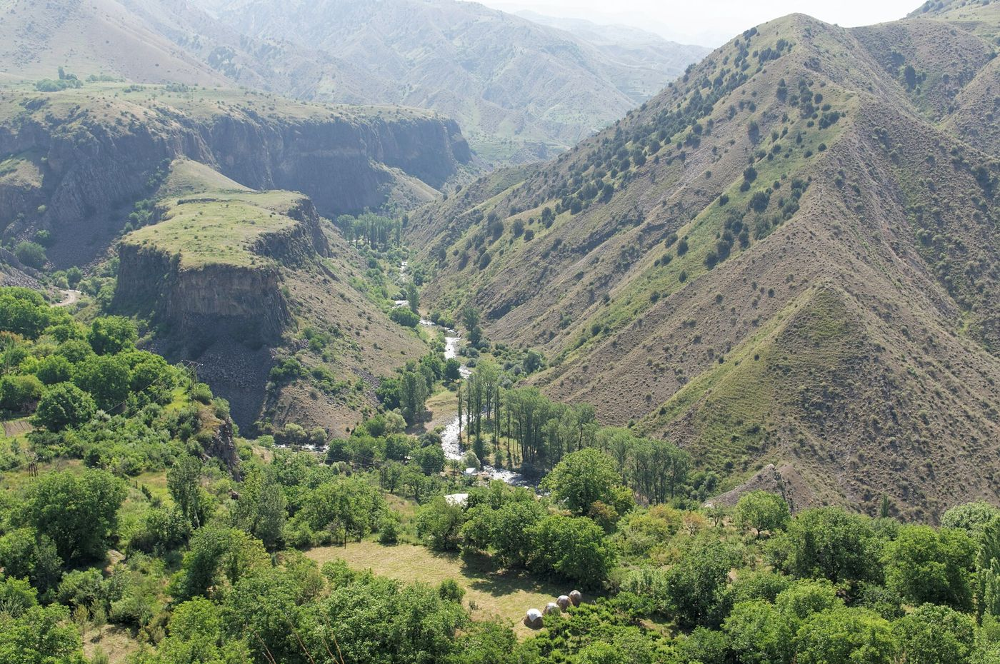
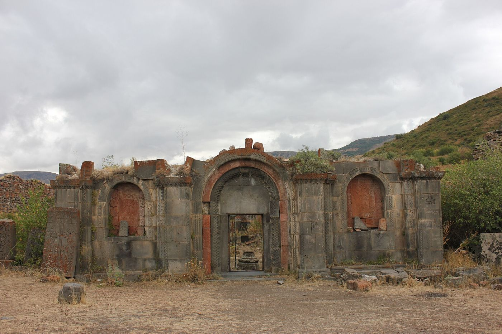
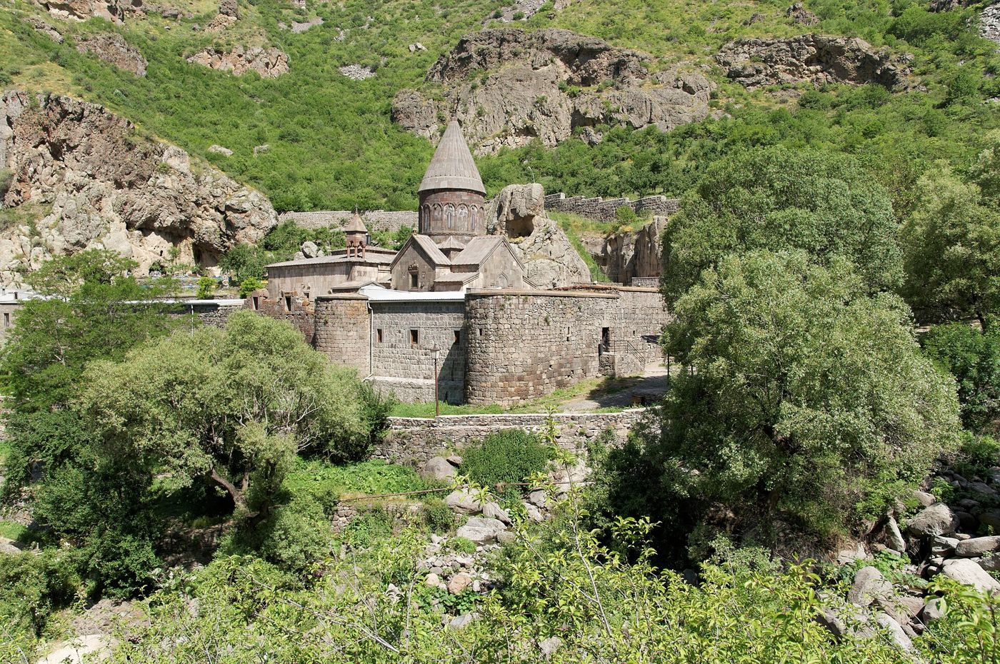
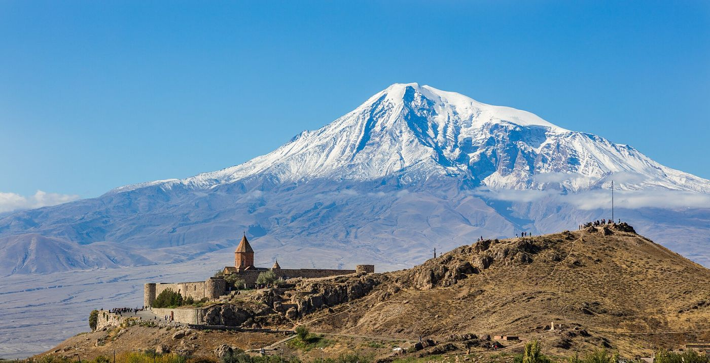

Ущелье АзатаThe Azat gorgeԱզատի կիրճ
Под храмом Гарни I века — зелёное ущелье с базальтовыми стенами. По нему идёт первая тропа тура.Below the 1st-century Garni temple lies a green gorge with basalt walls. The tour's first trail runs through it.I դարի Գառնիի տաճարի ներքևում կանաչ կիրճ է՝ բազալտե պատերով։ Դրանով է անցնում տուրի առաջին արահետը։
Фото: Photo: Լուսանկար՝ Vyacheslav Argenberg, CC BY 4.0, Wikimedia Commons

Авуц ТарHavuts TarՀավուց թառ
Руины монастыря на плато над ущельем Гарни — верхняя точка тропы второго дня.Monastery ruins on a plateau above the Garni gorge — the high point of the day-two trail.Վանքի ավերակներ Գառնիի կիրճի վերևի սարահարթին՝ երկրորդ օրվա արահետի ամենաբարձր կետը։
Фото: Photo: Լուսանկար՝ Beko, CC BY-SA 4.0, Wikimedia Commons

ГегардGeghardԳեղարդ
Монастырь IV–XIII веков, часть храмов высечена прямо в скале.A monastery of the 4th–13th centuries; some of its churches are carved straight into the rock.IV–XIII դդ. վանք, որի եկեղեցիների մի մասը փորված է հենց ժայռի մեջ։
Фото: Photo: Լուսանկար՝ Vyacheslav Argenberg, CC BY 4.0, Wikimedia Commons

ГошаванкGoshavankԳոշավանք
Монастырь XII–XIII веков в деревне Гош — финиш лесной тропы от озера Парз.A 12th–13th-century monastery in the village of Gosh, at the end of the forest trail from Lake Parz.XII–XIII դդ. վանք Գոշ գյուղում՝ Պարզ լճից եկող անտառային արահետի վերջնակետը։
Фото: Photo: Լուսանկար՝ Pandukht, CC BY-SA 3.0, Wikimedia Commons

Хор ВирапKhor VirapԽոր Վիրապ
Монастырь на холме у подножия Арарата — лучший вид на гору из Армении.A monastery on a hill at the foot of Ararat — the best view of the mountain from Armenia.Վանք բլրի վրա Արարատի ստորոտին՝ լեռան լավագույն տեսարանը Հայաստանից։
Фото: Photo: Լուսանկար՝ Diego Delso, CC BY-SA 4.0, Wikimedia Commons

Нораванк и Арени-1Noravank and Areni-1Նորավանք և Արենի-1
Монастырь XIII века среди красных скал ущелья и пещера, где нашли древнейшую известную винодельню мира.A 13th-century monastery among red cliffs, and the cave where the world's oldest known winery was found.XIII դարի վանք կարմիր ժայռերի մեջ և քարանձավ, որտեղ գտել են աշխարհի ամենահին հայտնի գինեգործարանը։
Фото: Photo: Լուսանկար՝ Diego Delso, CC BY-SA 4.0, Wikimedia Commons